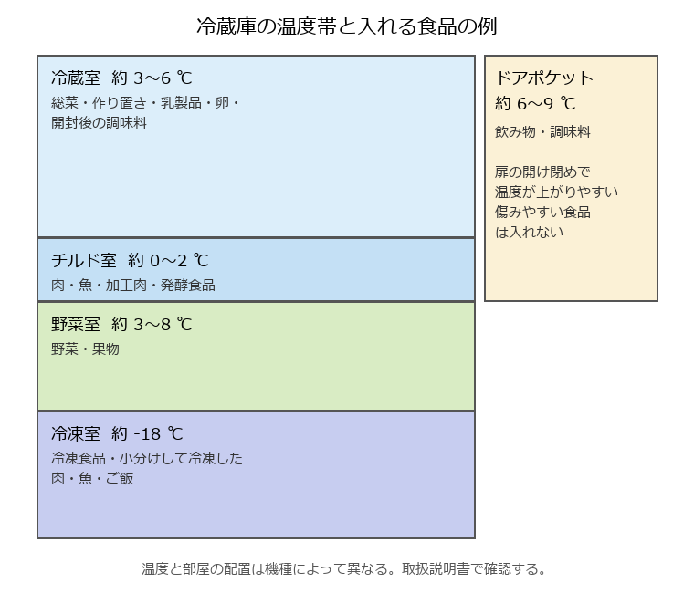

10. 食材の買い方と保存
本章では、一人暮らしに合った食材の買い方と、冷蔵・冷凍・常温での保存方法を説明する。一人暮らしでは、食材を使い切れずに傷ませてしまうことが多い。買い方と保存の工夫で、食費とむだを減らせる。
10.1. 買い物の計画
計画を立てずに買い物をすると、同じものを買ったり、使い道のないものを買ったりしやすい。次の手順で買い物をするとよい。
冷蔵庫、冷凍室、食品棚の中身を確認する。
数日分の献立を大まかに決める。献立の立て方は「献立と栄養」で説明する。
足りない食材を書き出して、買い物リストを作る。
リストに沿って買う。
まとめ買いは週 1〜2 回にし、足りない生鮮食品を途中で買い足すと、買い物の時間と回数を減らせる。空腹のときに買い物をすると、予定外のものを買いすぎやすい。
10.2. 一人分の買い方
- 使い切れる量を買う
量が多いほうが割安でも、使い切れずに捨てれば損になる。野菜はカット野菜やばら売り、肉は少量パックも選択肢になる。
- 保存のきく食材を使う
冷凍野菜、冷凍のシーフードミックス、缶詰（ツナ、サバ）、乾物（乾燥わかめ、切り干し大根）は長持ちし、少しずつ使える。
- 日持ちする野菜を中心にする
玉ねぎ、じゃがいも、にんじん、キャベツは比較的長持ちし、いろいろな料理に使える。もやしや葉物は傷みやすいので、使う直前に買う。
- 使い回せる食材を選ぶ
1 つの食材を複数の料理に使う献立を考えると、使い切りやすい。たとえばキャベツは、炒め物、みそ汁、スープ、浅漬けに使える。
- 買い物の順番
常温の食品から先にかごに入れ、冷蔵・冷凍の食品は最後に入れる。冷たい食品が常温にさらされる時間を短くできる。
10.3. 消費期限と賞味期限
加工食品には、消費期限か賞味期限のどちらかが表示されている。
項目 |
消費期限 |
賞味期限 |
|---|---|---|
意味 |
安全に食べられる期限 |
おいしく食べられる期限 |
対象の食品 |
弁当、サンドイッチ、生菓子、総菜など、傷みやすい食品 |
スナック菓子、カップ麺、缶詰、ペットボトル飲料など、比較的傷みにくい食品 |
期限を過ぎたら |
食べないほうがよい |
すぐに食べられなくなるわけではない。見た目やにおいなどで判断する。 |
どちらの期限も、袋や容器を開けずに、表示された方法で保存した場合のものである。開封した後は、期限にかかわらず早めに食べきる。
10.4. 冷蔵庫の使い方
冷蔵庫は、場所によって温度が異なる（図 10.1）。食品に合った場所に入れることで、長持ちさせられる。


図 10.1 冷蔵庫の温度帯と入れる食品の例
冷蔵庫を上手に使うための注意点は次のとおりである。
- 詰め込みすぎない
冷蔵室に食品を詰め込みすぎると、冷気が循環せず、冷えにくくなる。冷蔵室は 7 割程度を目安にする。一方、冷凍室は凍った食品どうしが冷やし合うので、隙間なく詰めたほうが効率がよい。
- 熱いものを入れない
温かい料理は、粗熱が取れてから入れる。ただし、常温で長く放置するのもよくない。浅い容器に移したり、容器の下に保冷剤や冷水を当てたりして、早く冷ます。
- 扉の開け閉めを減らす
扉を開けている時間が長いと、庫内の温度が上がる。何がどこにあるか分かるように整理しておく。
- 古いものを手前に置く
先に買ったものを手前に置き、先に使う。
- 冷蔵庫の温度を確認する
冷蔵室は 10 ℃ 以下、冷凍室は -15 ℃ 以下に保つ。庫内に温度計を置いておくと確認しやすい。
10.5. 保存期間の目安
保存期間は、食品の鮮度や状態、冷蔵庫の性能によって異なる。次の表は大まかな目安であり、パッケージの期限表示がある場合はそれを優先する。少しでもにおいや見た目がおかしいと感じたら、食べずに捨てる。
食品 |
目安 |
保存のこつ |
|---|---|---|
ひき肉、魚の切り身 |
1〜2 日 |
チルド室に入れる。すぐ使わない分は購入した日に冷凍する。 |
薄切り肉、こま切れ肉 |
2〜3 日 |
チルド室に入れる。 |
刺身 |
購入した日 |
当日中に食べる。 |
作り置きのおかず |
2〜3 日 |
清潔な容器に入れ、取り分けるときは清潔な箸を使う。 |
炊いたご飯 |
冷蔵には向かない |
冷蔵すると硬くなり、味が落ちる。食べきれない分は冷凍する。 |
卵 |
パックの賞味期限まで |
パックのまま冷蔵室に入れると、期限を確認しやすい。 |
葉物野菜（ほうれん草など） |
2〜3 日 |
ぬらした新聞紙やキッチンペーパーで包み、ポリ袋に入れて野菜室に立てて入れる。 |
キャベツ、白菜 |
1〜2 週間 |
切ったものは切り口をラップで覆い、早めに使う。 |
にんじん、大根 |
1〜2 週間 |
水気を拭き、ポリ袋に入れて野菜室に入れる。 |
食品 |
保存のこつ |
|---|---|
玉ねぎ、じゃがいも |
風通しのよい冷暗所で保存する。じゃがいもは日光に当てると芽が出たり、皮が緑色になったりする。夏場は野菜室に入れてもよい。 |
米 |
高温多湿を避け、密閉容器に入れて保存する。夏場は虫が発生しやすいので、ペットボトルなどに入れて冷蔵庫の野菜室に入れるとよい。 |
缶詰、乾物、調味料（未開封） |
直射日光の当たらない涼しい場所で保存する。開封後は表示に従い、冷蔵が必要なものは冷蔵庫に入れる。 |
10.6. 冷凍と解凍のこつ
冷凍保存をすると、食材を長持ちさせ、使い切れない分のむだを減らせる。家庭の冷凍室で保存する場合は、1 か月程度を目安に使いきる。時間がたつと、乾燥や酸化によって味と食感が落ちる。
- 冷凍のこつ
1 回に使う分ずつ小分けして、薄く平らにして冷凍する。早く凍り、早く解凍できる。
空気に触れないように、ラップでぴったり包むか、冷凍用の保存袋に入れて空気を抜く。
袋に、中身と冷凍した日付を書く。
炊いたご飯は、温かいうちに 1 食分ずつラップで平らに包み、冷めてから冷凍する。
- 冷凍に向かない食品
豆腐、こんにゃく（食感が大きく変わる）
生のじゃがいも（食感がぼそぼそになる）
レタスなど生で食べる葉物（解凍すると水っぽくしんなりする）
ゆで卵（白身がゴムのような食感になる）
- 解凍のこつ
肉や魚は、冷蔵室に移して時間をかけて解凍すると、品質が落ちにくい。
急ぐ場合は、電子レンジの解凍機能を使う。
常温での解凍は、表面の温度が上がって細菌が増えやすいので避ける。
一度解凍したものを再び冷凍すると、品質が落ち、細菌も増えやすい。使い切れる分だけ解凍する。
冷凍野菜や小分けにした肉は、凍ったまま加熱調理できるものが多い。
10.7. 食品ロスを減らす工夫
まだ食べられるのに捨てられる食品を食品ロスという。家庭から出る食品ロスの主な原因は、食べ残し、期限切れなどによる手付かずの食品の廃棄、野菜の皮を厚くむきすぎるなどの過剰な除去である。
買う前に冷蔵庫の中身を確認する。
期限の近いものから使う。冷蔵庫の中に「早く食べるもの」の置き場所を作るとよい。
使い切れない食材は、傷む前に冷凍する。
残った野菜は、みそ汁、スープ、炒め物、カレーなどにまとめて使う。